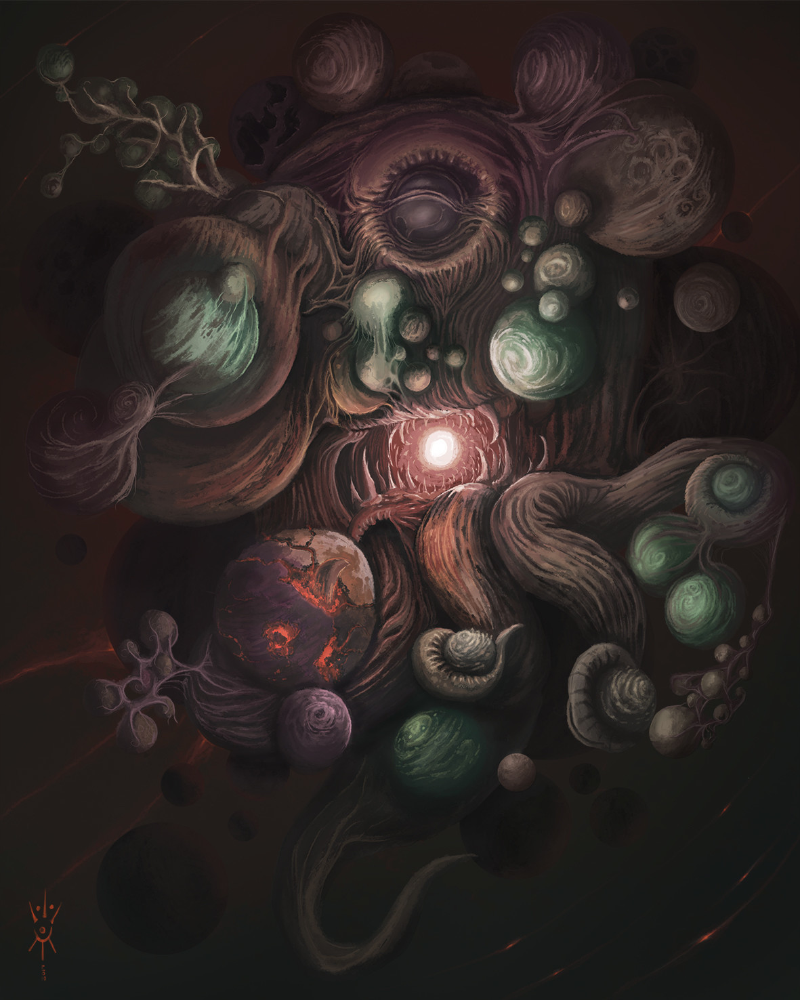

Йог-Сотот был вратами, через которые Древние пришли на Землю, и через него они придут вновь из-за грани миров, куда были. изгнаны. Он соединяет в себе воедино все время и пространство, поэтому ему ведомо прошлое и будущее, он Все-в-Одном Одно-во-Всем.
Служители Йог-Сотота, что из числа людей, взывают к нему с вершин холмов, увенчанных каменными кругами. И он является на их зов в виде скопления похожих на солнца сияющих сфер, сочащихся протоплазмой из которой возникает мерзкая черная плоть аморфного космического чудовища со множеством протуберанцев. Иногда он вступает в связь с человеческими женщинами, и те рождают от него ужасное потомство, которому суждено открыть врата и призвать Древних на Землю.
Впервые упоминается в повести Г. Ф. Лавкрафта «Случай Чарльза Декстера Варда» (The Case of Charles Dexter Ward, 1927), позднее описывается в рассказах «Ужас Данвича» (The Dunwich Horror, 1928) и «Врата Серебряного Ключа» (Through the Gates of the Silver Key, 1933).
